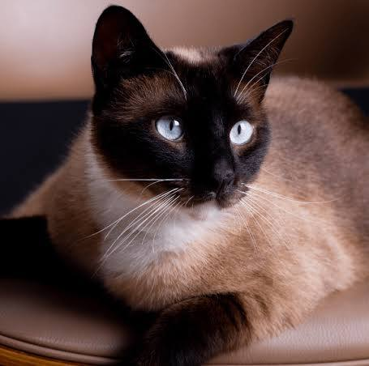
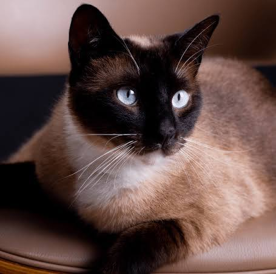

Los gatos son animales fascinantes, independientes y muy cariñosos. Han vivido con los seres humanos durante miles de años y siguen siendo uno de los animales más queridos del mundo.
Este sitio web está dedicado a compartir curiosidades, cuidados y datos interesantes sobre los gatos.
Los gatos poseen habilidades increíbles: pueden saltar hasta seis veces su longitud corporal, tienen un oído muy desarrollado y duermen entre 12 y 16 horas al día.
En esta página podrás encontrar información sobre cuidados, comportamiento, razas y curiosidades del mundo felino.
Si eres amante de los gatos… ¡este es tu sitio! 😺
Y para terminar esta introducción… ¡miau y hasta pronto! 哈哈哈哈
Videos de gatos en YouTube 



Los gatos domésticos pertenecen a la especie *Felis catus* y son conocidos por su agilidad, inteligencia y carácter curioso.
| China 🇨🇳 | ~53 millones de gatos |
| España 🇪🇦 | ~6 millones de gatos |
| Estados Unidos 🇺🇲 | ~74 millones de gatos |